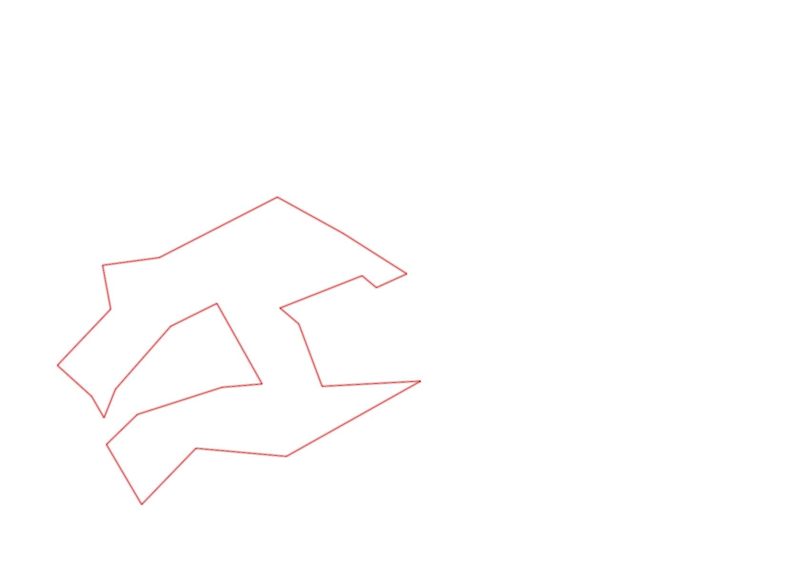
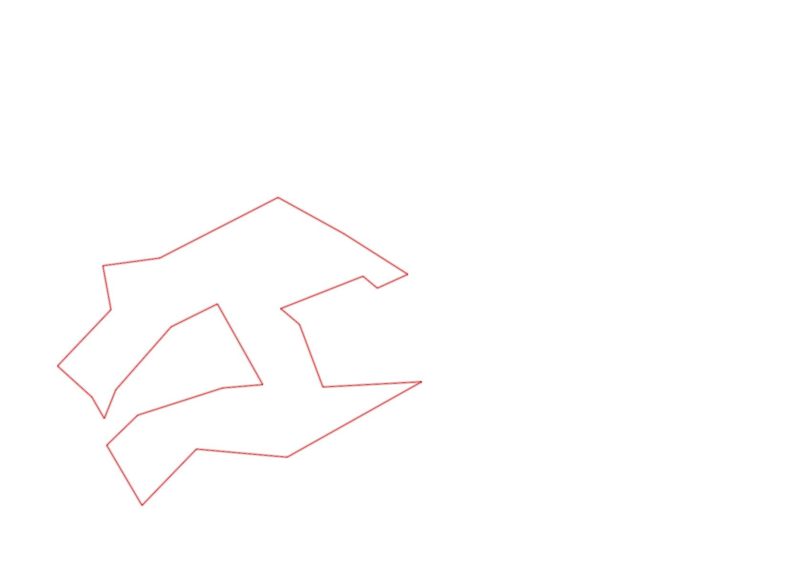

| Control |
Points |
Time Punched |
Distance |
Your Time |
Pace |
Place |
Fastest Time |
Median Time |
% Behind Fastest |
| 92 |
90 |
|
0.23 |
0:02:15 |
09:46 |
1 / 11 |
0:02:15 |
0:02:35 |
0% |
| 35 |
30 |
|
0.05 |
0:02:19 |
46:20 |
10 / 12 |
0:01:31 |
0:01:55 |
52% |
| 47 |
40 |
|
0.09 |
0:01:30 |
16:40 |
5 / 11 |
0:00:54 |
0:01:31 |
66% |
| 57 |
50 |
|
0.2 |
0:03:52 |
19:20 |
1 / 7 |
0:03:52 |
0:04:28 |
0% |
| 107 |
100 |
|
0.2 |
0:03:26 |
17:10 |
16 / 21 |
0:00:00 |
0:02:52 |
-% |
| 63 |
60 |
|
0.35 |
0:02:41 |
07:40 |
9 / 18 |
0:01:59 |
0:02:42 |
35% |
| 32 |
30 |
|
0.15 |
0:01:12 |
08:00 |
21 / 27 |
0:00:36 |
0:00:56 |
100% |
| 44 |
40 |
|
0.12 |
0:01:49 |
15:08 |
15 / 29 |
0:00:52 |
0:01:49 |
109% |
| 53 |
50 |
|
0.2 |
0:01:39 |
08:15 |
4 / 26 |
0:01:31 |
0:02:15 |
8% |
| 69 |
60 |
|
0.12 |
0:01:17 |
10:41 |
12 / 29 |
0:00:45 |
0:01:18 |
71% |
| 71 |
70 |
|
0.06 |
0:00:54 |
15:00 |
3 / 25 |
0:00:48 |
0:01:13 |
12% |
| 54 |
50 |
|
0.08 |
0:00:34 |
07:05 |
5 / 33 |
0:00:27 |
0:00:45 |
25% |
| 130 |
30 |
|
0.22 |
0:01:29 |
06:44 |
2 / 2 |
0:01:00 |
0:01:14 |
48% |
| 126 |
20 |
|
0.14 |
0:01:16 |
09:02 |
3 / 12 |
0:01:09 |
0:01:26 |
10% |
| 38 |
30 |
|
0.24 |
0:01:46 |
07:21 |
2 / 2 |
0:01:29 |
0:01:37 |
19% |
| 60 |
60 |
|
0.11 |
0:00:54 |
08:10 |
7 / 19 |
0:00:42 |
0:00:57 |
28% |
| 41 |
40 |
|
0.23 |
0:01:59 |
08:37 |
6 / 7 |
0:01:41 |
0:01:52 |
17% |
| 40 |
40 |
|
0.11 |
0:01:08 |
10:18 |
18 / 24 |
0:00:45 |
0:01:00 |
51% |
| 77 |
70 |
|
0.18 |
0:02:10 |
12:02 |
8 / 21 |
0:01:35 |
0:02:21 |
36% |
| 59 |
50 |
|
0.21 |
0:02:46 |
13:10 |
9 / 18 |
0:02:00 |
0:02:47 |
38% |
| 61 |
60 |
|
0.24 |
0:03:16 |
13:36 |
10 / 19 |
0:02:14 |
0:03:16 |
46% |
| 37 |
30 |
|
0.4 |
0:05:22 |
13:25 |
4 / 6 |
0:03:20 |
0:04:58 |
61% |
| 42 |
40 |
|
0.26 |
0:02:56 |
11:16 |
3 / 6 |
0:02:08 |
0:03:18 |
37% |
| 127 |
20 |
|
0.17 |
0:01:36 |
09:24 |
3 / 12 |
0:01:27 |
0:01:48 |
10% |
| Finish |
0 |
|
0.06 |
0:00:51 |
14:10 |
7 / 8 |
-1 day, 23:05:57 |
0:00:35 |
-99% |
Total Distance Covered: 4.42km
Points Scored: 1160
Late Penalty: 0
Final Score: 1160
Total Time: 0hours 50minutes 57seconds
Efficiency: 262.44 points/km
 
